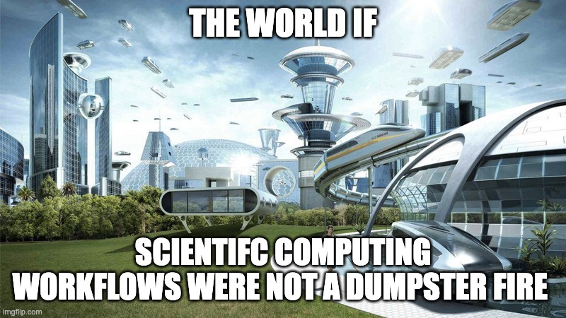

// Global utility for Quarto/OJS data transformation
transpose = (obj) => {
if (!obj || Object.keys(obj).length === 0) return [];
const keys = Object.keys(obj);
if (keys.length === 0 || !obj[keys[0]]) return [];
return obj[keys[0]].map((_, i) => {
const r = {};
keys.forEach(k => r[k] = obj[k][i]);
return r;
});
}There is Plenty of Room in Latent Space
Scientific Workflows on the Eve of the Butlerian Jihad
W. H. W. Thompson
Expectation vs. Reality
What I Imagined
data_imagined = [
{name: "Reading/Understanding", value: 20, color: "#861388"},
{name: "Thinking Deeply", value: 60, color: "#E15A97"},
{name: "Writing Code", value: 10, color: "#2F6690"},
{name: "Communicating", value: 10, color: "#0CBABA"}
]
Plot.plot({
width: 480,
height: 400,
marks: [
Plot.barY(data_imagined, {
x: "1",
y: "value",
fill: "color",
stroke: "white",
title: d => `${d.name}: ${d.value}%`
}),
Plot.text(data_imagined, Plot.stackY({
x: "1",
y: "value",
text: d => `${d.name}\n(${d.value}%)`,
fill: "white",
fontSize: 14
}))
],
coordinate: "polar",
style: {background: "transparent", margin: "auto"},
axis: null
})The Reality
data_reality_1 = [
{name: "Reading", value: 10, color: "#861388"},
{name: "Writing Code", value: 80, color: "#2F6690"},
{name: "Thinking", value: 5, color: "#E15A97"},
{name: "Making Slides", value: 5, color: "#0CBABA"}
]
Plot.plot({
width: 480,
height: 400,
marks: [
Plot.barY(data_reality_1, {
x: "1",
y: "value",
fill: "color",
stroke: "white",
title: d => `${d.name}: ${d.value}%`
}),
Plot.text(data_reality_1, Plot.stackY({
x: "1",
y: "value",
text: d => d.value > 5 ? `${d.name}\n(${d.value}%)` : "",
fill: "white",
fontSize: 14
}))
],
coordinate: "polar",
style: {background: "transparent", margin: "auto"},
axis: null
})Expectation vs. Reality
Expectations
// Redefine to keep auto-animate happy, or OJS will handle reactivity
Plot.plot({
width: 480,
height: 400,
marks: [
Plot.barY(data_imagined, {
x: "1",
y: "value",
fill: "color",
stroke: "white",
title: d => `${d.name}: ${d.value}%`
}),
Plot.text(data_imagined, Plot.stackY({
x: "1",
y: "value",
text: d => `${d.name}\n(${d.value}%)`,
fill: "white",
fontSize: 14
}))
],
coordinate: "polar",
style: {background: "transparent", margin: "auto"},
axis: null
})Reality Breakdown
data_reality_detailed = [
{name: "Reading", value: 10, color: "#861388"},
{name: "Conda Hell", value: 10, color: "#132a3b"},
{name: "Actual Algorithm", value: 10, color: "#19374d"},
{name: "Boilerplate/IO", value: 20, color: "#1f4460"},
{name: "Off-by-one bugs", value: 10, color: "#29597e"},
{name: "SLURM Queues", value: 10, color: "#2F6690"},
{name: "Matplotlib Ticks", value: 10, color: "#4483b3"},
{name: "Terminal Staring", value: 10, color: "#71a3c9"},
{name: "Thinking", value: 5, color: "#E15A97"},
{name: "Making Slides", value: 5, color: "#0CBABA"}
]
Plot.plot({
width: 480,
height: 400,
marks: [
Plot.barY(data_reality_detailed, {
x: "1",
y: "value",
fill: "color",
stroke: "white",
title: d => `${d.name}: ${d.value}%`
}),
Plot.text(data_reality_detailed, Plot.stackY({
x: "1",
y: "value",
text: d => d.value >= 10 ? d.name : "",
fill: d => ["#71a3c9", "#9dc3df"].includes(d.color) ? "#2d3436" : "white",
fontSize: 11
}))
],
coordinate: "polar",
style: {background: "transparent", margin: "auto"},
axis: null
})A Moral Failure

Without SLURM We Would Have Cured Cancer By Now
The Iron Rule of Scientific Software Development
- If you take the time to build out code the right way you will never use it
- If you write sloppy code it will bite you in the ass
- Damned if you do. Damned if you don’t.
Opprotunity Cost of Good Software Dev Practices

Virtuous Cycle of Vibecoding
html`<div style="display: flex; justify-content: center; align-items: center; height: 500px; width: 100%; position: relative; font-family: sans-serif;">
<svg width="1000" height="400" viewBox="0 0 1000 400" fill="none" xmlns="http://www.w3.org/2000/svg">
<!-- Arrows -->
<path d="M350 120 Q 500 50 650 120" stroke="#861388" stroke-width="4" marker-end="url(#arrow-magenta)" fill="none" class="animated-path" />
<path d="M650 280 Q 500 350 350 280" stroke="#0CBABA" stroke-width="4" marker-end="url(#arrow-teal)" fill="none" class="animated-path" />
<!-- Definitions for markers -->
<defs>
<marker id="arrow-magenta" markerWidth="10" markerHeight="10" refX="9" refY="3" orient="auto" markerUnits="strokeWidth">
<path d="M0,0 L0,6 L9,3 z" fill="#861388" />
</marker>
<marker id="arrow-teal" markerWidth="10" markerHeight="10" refX="9" refY="3" orient="auto" markerUnits="strokeWidth">
<path d="M0,0 L0,6 L9,3 z" fill="#0CBABA" />
</marker>
<filter id="glass" x="-20%" y="-20%" width="140%" height="140%">
<feGaussianBlur in="SourceGraphic" stdDeviation="5" />
</filter>
</defs>
<!-- Left Box -->
<foreignObject x="50" y="140" width="300" height="120">
<div style="background: rgba(255, 255, 255, 0.8); backdrop-filter: blur(8px); border-radius: 12px; padding: 20px; border: 1px solid rgba(255, 255, 255, 0.5); border-left: 8px solid #861388; box-shadow: 0 10px 30px rgba(0,0,0,0.1); height: 100%; box-sizing: border-box; display: flex; align-items: center; text-align: center; font-weight: 600; font-size: 18px; color: #2d3436;">
LLMs lower the barrier for adopting tools & dev practices
</div>
</foreignObject>
<!-- Right Box -->
<foreignObject x="650" y="140" width="300" height="120">
<div style="background: rgba(255, 255, 255, 0.8); backdrop-filter: blur(8px); border-radius: 12px; padding: 20px; border: 1px solid rgba(255, 255, 255, 0.5); border-left: 8px solid #0CBABA; box-shadow: 0 10px 30px rgba(0,0,0,0.1); height: 100%; box-sizing: border-box; display: flex; align-items: center; text-align: center; font-weight: 600; font-size: 18px; color: #2d3436;">
Good development practices make LLMs more efficient
</div>
</foreignObject>
</svg>
<style>
.animated-path {
stroke-dasharray: 1000;
stroke-dashoffset: 1000;
animation: draw 2s linear forwards infinite;
}
@keyframes draw {
from { stroke-dashoffset: 1000; }
to { stroke-dashoffset: 0; }
}
</style>
</div>`Your Workflow
The Process
- You have data or simulation parameters.
- You have a model (ABM/statistical/ML).
- You want to run sweeps with fixed logic.
- You want to collect & visualize results.
- You want to turn plots into a publication.
The Goal
Automate the plumbing so you can focus on the science.
Example Project
- Train a BERT to correctly classifer thhe AG news dataset
- 4 classes: Buisness, Sci/Tech, Sports/World
- Train an MLP classifier on BERT embeddings
html`<div class="minimal-table">
${Inputs.table(transpose(dataset_samples), {
columns: ["label", "text"],
rows: 10,
layout: "fixed"
})}
</div>
<style>
.minimal-table table {
border-collapse: collapse;
width: 100%;
font-family: inherit;
font-size: 0.8em;
}
.minimal-table thead th {
background-color: #861388;
color: white;
text-align: left;
padding: 12px;
text-transform: uppercase;
letter-spacing: 0.05em;
font-weight: 600;
border-bottom: 2px solid #0CBABA;
}
.minimal-table tbody td {
padding: 10px 12px;
border-bottom: 1px solid rgba(12, 186, 186, 0.2);
color: #2d3436;
}
.minimal-table tbody tr:nth-child(even) {
background-color: rgba(134, 19, 136, 0.03);
}
.minimal-table .observablehq--table-container {
border: 1px solid rgba(134, 19, 136, 0.1);
border-radius: 8px;
overflow: hidden;
box-shadow: 0 4px 15px rgba(0,0,0,0.05);
}
</style>`Scientific Software Checklist
| Problem | Solution |
|---|---|
| Reproducible Environment | UV package manager & lockfiles |
| Data Validation | Pydantic schemas & types |
| Hardware Acceleration | PyTorch and JAX |
| Code Reliability | Pytest and CI/CD |
| Workflow Automation | Snakemake pipelines |
| Experiment Tracking | Weights and Biases |
| Publication/Dashboards | Quarto |
The Foundation
1. Python Features
- Logic in Source: Keep logic in
.pyfiles. Portable and testable. - Type Hinting: Python is dynamic, but annotations catch bugs early.
- Git Workflow: Use branches and Pull Requests (PRs) always.
1. Environment (UV)
- Speed: Muuuch faster than conda.
- Exact Reproducability:
uv.lockensures reproducibility. - Linked Dependencies: Dependcy linking prevents identical redundant binaries across environments
Acceleration (JAX / PyTorch)
- Rule of Thumb: If it can be done with numpy vectorized operations it will be faster on a GPU
- Auto-Diff: Get gradients for ODE or ABM simulations.
- Batching:
vmapruns 1,000s of simulations in parallel on 1 GPU. - Drop in Replacement: With Jax just replace
npwithjnpto get immediate hardware accelration.
import jax.numpy as jnp
from jax import vmap
# A standard function for one data-point
def compute_score(x):
return jnp.sum(jnp.sin(x) ** 2)
# Automatically vectorize to handle batches
batch_score = vmap(compute_score)
# Result: Instant GPU acceleration for 10,000 samples
scores = batch_score(large_input_matrix)Validation (Pydantic)
- Enforce Structure: Ensure inputs/outputs are type-safe.
- LLM Ready: Validated schemas make it easier for agents to reason.
- Auto-IDs: Generate run names from hyperparameters.
The Plumbing
Command Center (Just)
- Abstraction Layer: Hide complex
snakemakeoruvcommands behind simple aliases. - Reproducible: Ensure everyone runs the same commands in the same environment.
Orchestration (Snakemake)
- Automatic workflow generation: Build the whole sweep automatically.
- Slurm Integration: Manages VACC jobs without bespoke batch scripts.
- Amnesia Proof: Only runs what has changed.
# workflow/rules/train.smk
rule train_bert_classifier:
output:
weights = "results/{cfg_name}/{params_path}/model.pt",
stats = "results/{cfg_name}/{params_path}/training_stats.parquet"
resources:
gpu=1
shell:
"PYTHONPATH=src python scripts/run_training.py "
"--config configs/{wildcards.cfg_name}.yaml "
"--output {output.weights}"Testing (Pytest) & CI
- Pytest Rigor: Validate each part of research code.
- Actions: Run everything on every push to ensure trust.
Sync (WandB)
- Track Metrics: Log losses and gradients in real-time.
- Reproducible: Every run is versioned and tagged.
Storing Data (DuckDB)
- Parquet + DuckDB: Use SQL to query directories of parquet files
- SQLModel: Type-safe Python Object Relational Mapping (ORM)
- MYDB: For data-intensive projects use MYDB to host MySQL server
6. Interactive SQL Console
Live Metrics Tracking
Publication (Quarto)
- Unified Logic: Use LaTeX, Python, and Javascript in one document.
- Better Notebooks: Use python to analyze data, pass results to javascript for interctive plots
- One Framework, Many Formats: Make Websties/Presentaions/PDFs and Latex Documents
- Reproducible: One command to render the whole dashboard/paper.
Resources & More
AI Tools for Students
IDEs
No excuse not to use Cursor/VSCode
- VSCode (Standard)
- Cursor (Student Free)
- Antigravity (Agent Labs)
LLMs
High-Context Research Partners
- Gemini Pro (2M Tokens)
- GitHub Copilot (Free)
- Claude Campus (Credits)
💡 Workflow Inspiration
Check out Fitz’s Workflow for clean pipeline design.
Automation via MCP
Scientific Agents
- Context RAGs: Bridge Zotero & NotebookLM into your agent’s reasoning.
- Orchestration: Agents can launch Snakemake & monitor VACC jobs in real-time.

This is the TIP OF THE ICEBERG
Yes, you can do this
Swarm Vibe
viewof settings = Inputs.form({
N: Inputs.range([50, 800], {label: "Agent Count", step: 10, value: 400}),
radius: Inputs.range([10, 150], {label: "Radius", step: 5, value: 45}),
noise: Inputs.range([0, 1], {label: "Entropy", step: 0.05, value: 0.15}),
speed: Inputs.range([1, 10], {label: "Velocity", step: 0.5, value: 4.5}),
attraction: Inputs.range([0, 5], {label: "Attraction", step: 0.1, value: 2.5})
})
html`
<style>
/* Compact Vertical Sidebar styling */
form.inputs-form {
display: flex !important;
flex-direction: column !important;
gap: 0.75rem !important;
background: rgba(255, 255, 255, 0.04) !important;
backdrop-filter: blur(15px) !important;
padding: 1rem !important;
border-radius: 12px !important;
border: 1px solid rgba(255, 255, 255, 0.1) !important;
color: white !important;
}
form.inputs-form > div {
margin: 0 !important;
display: flex !important;
flex-direction: column !important;
}
form.inputs-form label {
color: #0CBABA !important;
font-weight: 800 !important;
font-size: 0.5rem !important;
text-transform: uppercase !important;
letter-spacing: 1px !important;
margin-bottom: 4px !important;
}
form.inputs-form input[type=range] {
width: 100% !important;
accent-color: #0CBABA !important;
}
form.inputs-form output {
font-size: 0.7rem !important;
color: #eee !important;
margin-top: 2px !important;
}
form.inputs-form h3 { display: none !important; }
</style>
`// High-performance Vicsek Model in OJS
{
const width = 800;
const height = 550;
const canvas = html`<canvas width="${width}" height="${height}" style="width: 100%; height: 550px; border-radius: 12px; background: #000; cursor: crosshair; box-shadow: 0 20px 50px rgba(0,0,0,0.4); border: 1px solid rgba(255,255,255,0.05);"></canvas>`;
const ctx = canvas.getContext("2d");
// State
let agents = Array.from({length: settings.N}, () => ({
x: Math.random() * width,
y: Math.random() * height,
theta: Math.random() * Math.PI * 2
}));
// Track mouse
let mouse = {x: -1000, y: -1000};
canvas.addEventListener("mousemove", (e) => {
const rect = canvas.getBoundingClientRect();
mouse.x = (e.clientX - rect.left) * (width / rect.width);
mouse.y = (e.clientY - rect.top) * (height / rect.height);
});
canvas.addEventListener("mouseleave", () => {
mouse.x = -1000;
mouse.y = -1000;
});
function update() {
if (agents.length !== settings.N) {
if (agents.length < settings.N) {
for (let i = agents.length; i < settings.N; i++) {
agents.push({ x: Math.random() * width, y: Math.random() * height, theta: Math.random() * Math.PI * 2 });
}
} else {
agents = agents.slice(0, settings.N);
}
}
const nextAgents = agents.map((a, i) => {
let sumSin = 0;
let sumCos = 0;
let count = 0;
for (let j = 0; j < agents.length; j++) {
const b = agents[j];
let dx = b.x - a.x;
let dy = b.y - a.y;
if (dx > width/2) dx -= width;
if (dx < -width/2) dx += width;
if (dy > height/2) dy -= height;
if (dy < -height/2) dy += height;
if (dx*dx + dy*dy < settings.radius * settings.radius) {
sumSin += Math.sin(b.theta);
sumCos += Math.cos(b.theta);
count++;
}
}
let avgTheta = Math.atan2(sumSin / count, sumCos / count);
if (mouse.x > 0) {
let mdx = mouse.x - a.x;
let mdy = mouse.y - a.y;
if (mdx > width/2) mdx -= width;
if (mdx < -width/2) mdx += width;
if (mdy > height/2) mdy -= height;
if (mdy < -height/2) mdy += height;
const angleToMouse = Math.atan2(mdy, mdx);
let diff = angleToMouse - avgTheta;
while (diff > Math.PI) diff -= Math.PI * 2;
while (diff < -Math.PI) diff += Math.PI * 2;
avgTheta += diff * (settings.attraction / 10);
}
const newTheta = avgTheta + (Math.random() - 0.5) * settings.noise;
let nextX = a.x + Math.cos(newTheta) * settings.speed;
let nextY = a.y + Math.sin(newTheta) * settings.speed;
if (nextX < 0) nextX += width;
if (nextX >= width) nextX -= width;
if (nextY < 0) nextY += height;
if (nextY >= height) nextY -= height;
return { x: nextX, y: nextY, theta: newTheta };
});
agents = nextAgents;
}
function draw() {
ctx.fillStyle = "rgba(0, 5, 15, 0.45)";
ctx.fillRect(0, 0, width, height);
ctx.lineWidth = 2.5;
agents.forEach((a, i) => {
const hue = 280 + Math.sin(a.theta) * 45;
ctx.strokeStyle = `hsla(${hue}, 85%, 65%, 0.8)`;
ctx.beginPath();
ctx.moveTo(a.x, a.y);
ctx.lineTo(a.x - Math.cos(a.theta) * 12, a.y - Math.sin(a.theta) * 12);
ctx.stroke();
ctx.fillStyle = `hsla(${hue}, 95%, 75%, 1)`;
ctx.beginPath();
ctx.arc(a.x, a.y, 2.2, 0, Math.PI * 2);
ctx.fill();
});
update();
requestAnimationFrame(draw);
}
requestAnimationFrame(draw);
return canvas;
}We have a couple of year until they turn us into paper clips, let’s make the most of it
Scientific Software Development Practices in the Era of Vibecoding